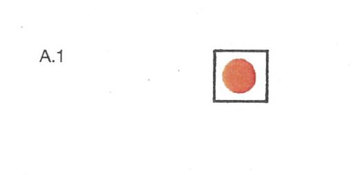

Strecke | Richtpegel für Berg- und Talfahrt Wasserstand | |
| Marke I | Marke II | |
| Basel (km 166,53) | ||
| Basel-Schleusen Kembs Kembs (km 179,10) | Basel-Rheinhalle 7,00 8,20 | |
| Schleusen Iffezheim (km 334,00) | ||
| Schleusen Iffezheim-Germersheim Germersheim (km 384,00) | Maxau 6,20 7,50 | |
| Germersheim-Mannheim-Rheinau Mannheim-Rheinau (km 410,50) | Speyer 6,20 7,30 | |
| Mannheim-Rheinau-Mannheim-Sandhofen Mannheim-Sandhofen (km 431,50) | Mannheim 6,50 7,60 | |
| Mannheim-Sandhofen-Gernsheim Gernsheim (km 462,00) | Worms 4,40 6,50 | |
| Gernsheim-Eltville Eltville (km 511,00) | Mainz 4,75 6,30 | |
| Eltville-Lorch Lorch (km 540,00) | Bingen 3,50 4,90 | |
| Lorch-Bad Salzig Bad Salzig (km 566,00) | Kaub 4,60 6,40 | |
| Bad Salzig-Engers Engers (km 601,00) | Koblenz 4,70 6,50 | |
| Engers-Bad Breisig Bad Breisig (km 624,00) | Andernach 5,50 7,60 | |
| Bad Breisig-Mondorf Mondorf (km 660,00) | Oberwinter 4,90 6,80 | |
| Mondorf-Dormagen Dormagen (km 710,00) | Köln 6,20 8,30 | |
| Dormagen-Krefeld Krefeld (km 763,00) | Düsseldorf 7,10 8,80 | |
| Krefeld-Orsoy Orsoy (km 794,00) | Duisburg-Ruhrort 9,30 11,30 | |
| Orsoy-Rees Rees (km 837,00) | Wesel 8,70 10,60 | |
| Rees-Spyck'sche Fähre Spyck'sche Fähre (km 857,40) | Emmerich 7,00 8,70 | |
| in der Talfahrt durch ein bei km 291,30 |  |
| aufgestelltes rotes Licht (Zeichen A.1, Anlage 7); |
| in der Bergfahrt durch ein bei km 294,50 | |
| aufgestelltes rotes Licht (Zeichen A.1, Anlage 7). |